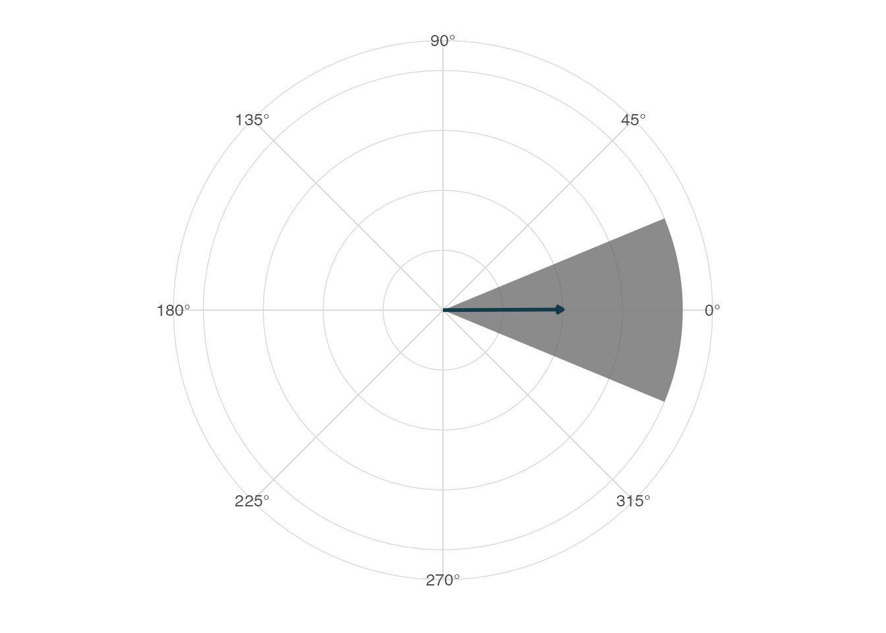
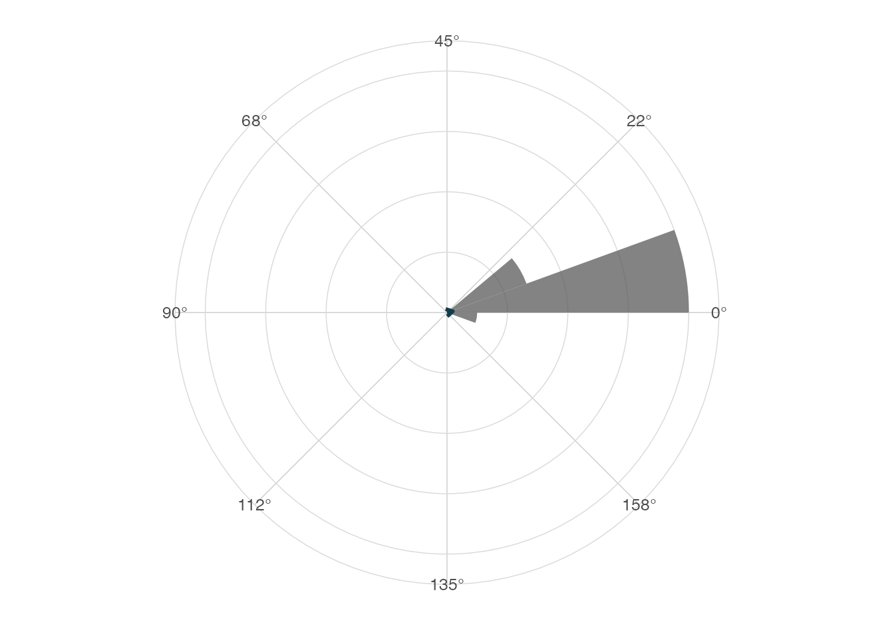
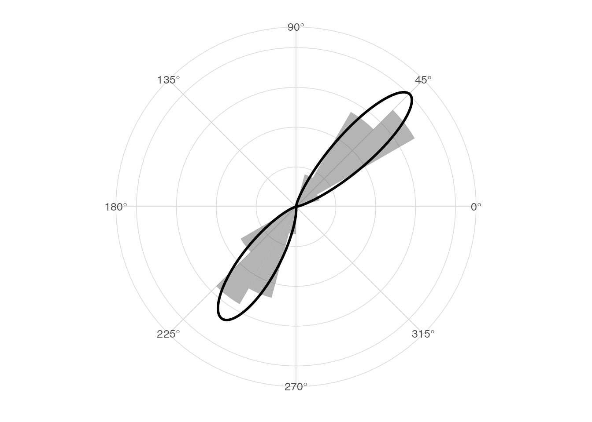

Comparative validation notes
Source:vignettes/validation-comparative.Rmd
validation-comparative.RmdScope
This article records lightweight comparative checks for
ggcircular. It is a pkgdown article rather than a CRAN
vignette because it may grow into a longer validation document for a
software paper.
The focus is practical agreement on core quantities:
- circular mean direction;
- mean resultant length;
- axial summaries;
- von Mises simulation and mixture diagnostics;
- timing and memory proxies for common plotting workflows.
library(ggplot2)
#> Warning: package 'ggplot2' was built under R version 4.5.2
library(dplyr)
#> Warning: package 'dplyr' was built under R version 4.5.2
#>
#> Attaching package: 'dplyr'
#> The following objects are masked from 'package:stats':
#>
#> filter, lag
#> The following objects are masked from 'package:base':
#>
#> intersect, setdiff, setequal, union
library(ggcircular)Optional package availability
comparison_packages <- c("circular", "CircStats", "NPCirc", "Directional")
tibble(
package = comparison_packages,
available = vapply(comparison_packages, requireNamespace, logical(1), quietly = TRUE)
)
#> # A tibble: 4 × 2
#> package available
#> <chr> <lgl>
#> 1 circular TRUE
#> 2 CircStats TRUE
#> 3 NPCirc FALSE
#> 4 Directional FALSEBoundary behaviour
boundary <- tibble(theta = c(0.02, 0.04, 2 * pi - 0.03, 2 * pi - 0.01))
boundary |>
summarise(
arithmetic_mean = mean(theta),
circular_mean = mean_direction(theta),
Rbar = mean_resultant_length(theta)
)
#> # A tibble: 1 × 3
#> arithmetic_mean circular_mean Rbar
#> <dbl> <dbl> <dbl>
#> 1 3.15 0.00500 1.000
ggplot(boundary, aes(x = theta)) +
geom_rose(bins = 16, alpha = 0.7) +
geom_mean_direction(colour = "#123C4A", linewidth = 1) +
scale_x_circular_degrees() +
coord_circular() +
theme_circular()
Comparison with circular when available
if (requireNamespace("circular", quietly = TRUE)) {
x <- c(rnorm(120, 0.5, 0.25), rnorm(120, 5.8, 0.25))
x <- normalize_angle(x)
circular_x <- circular::circular(x)
tibble(
statistic = c("mean", "Rbar"),
ggcircular = c(mean_direction(x), mean_resultant_length(x)),
circular = c(
as.numeric(circular::mean.circular(circular_x)),
as.numeric(circular::rho.circular(circular_x))
),
absolute_difference = abs(ggcircular - circular)
)
}
#> # A tibble: 2 × 4
#> statistic ggcircular circular absolute_difference
#> <chr> <dbl> <dbl> <dbl>
#> 1 mean 0.0196 0.0196 0
#> 2 Rbar 0.855 0.855 0Uniform data
uniform_angles <- seq(0, 2 * pi, length.out = 181)[-181]
tibble(
mean = mean_direction(uniform_angles),
Rbar = mean_resultant_length(uniform_angles),
rayleigh_p_value = rayleigh_test(uniform_angles)$p.value
)
#> # A tibble: 1 × 3
#> mean Rbar rayleigh_p_value
#> <dbl> <dbl> <dbl>
#> 1 NA 2.28e-17 1Axial data
axial_example <- tibble(
orientation = normalize_angle(c(
rnorm(60, 0.1, 0.08),
rnorm(60, pi + 0.1, 0.08)
))
)
axial_example |>
summarise(
directional_Rbar = mean_resultant_length(orientation),
axial_Rbar = mean_resultant_length(orientation, axial = TRUE),
axial_mean = mean_direction(orientation, axial = TRUE)
)
#> # A tibble: 1 × 3
#> directional_Rbar axial_Rbar axial_mean
#> <dbl> <dbl> <dbl>
#> 1 0.00536 0.986 0.112
ggplot(axial_example, aes(x = orientation)) +
geom_rose(bins = 18, axial = TRUE, alpha = 0.75) +
geom_mean_direction(axial = TRUE, colour = "#123C4A", linewidth = 1) +
scale_x_circular_degrees(limits = c(0, pi)) +
coord_circular() +
theme_circular()
#> Warning: Removed 61 rows containing non-finite outside the scale range
#> (`stat_rose()`).
#> Warning: Removed 61 rows containing non-finite outside the scale range
#> (`stat_mean_direction()`).
Bimodal mixture
set.seed(2026)
bimodal <- normalize_angle(c(rnorm(100, 0.8, 0.2), rnorm(100, 4.1, 0.25)))
fit <- fit_vonmises_mixture(bimodal, k = 2, nstart = 5, seed = 2026)
tidy_circular(fit)
#> # A tibble: 2 × 4
#> component proportion mu kappa
#> <int> <dbl> <dbl> <dbl>
#> 1 1 0.500 0.780 25.6
#> 2 2 0.500 4.13 18.1
glance_circular(fit)
#> # A tibble: 1 × 12
#> n components logLik AIC BIC iterations converged nstart start_id
#> <int> <int> <dbl> <dbl> <dbl> <int> <lgl> <int> <int>
#> 1 200 2 -118. 246. 262. 4 TRUE 5 1
#> # ℹ 3 more variables: empty_components <int>, kappa_max <dbl>, axial <lgl>
ggplot(tibble(theta = bimodal), aes(x = theta)) +
geom_rose(aes(y = after_stat(density)), bins = 24, alpha = 0.45) +
stat_vonmises_mixture(fit = fit, linewidth = 1) +
scale_x_circular_degrees() +
coord_circular() +
theme_circular()
Timing proxy
set.seed(1)
timing_data <- normalize_angle(rnorm(1000, 1, 0.7))
system.time({
density_tbl <- ggplot_build(
ggplot(tibble(theta = timing_data), aes(x = theta)) +
stat_circular_density(n = 256)
)$data[[1]]
})
#> user system elapsed
#> 0.016 0.001 0.017
density_tbl |>
summarise(n_grid = n(), density_min = min(density), density_max = max(density))
#> n_grid density_min density_max
#> 1 256 0.01047087 0.3970394Applied examples to keep validating
The main validation examples for an article should remain reproducible and small:
- wind direction with compass bearings;
- animal movement turn angles by state;
- axial orientation data;
- circular residual diagnostics from angular regression;
- posterior angular draws when
posterioris installed.
These examples are already represented in the package datasets and focused articles. The next validation pass should add formal numerical comparisons for packages that are installed in the full-suggests CI profile.